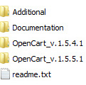
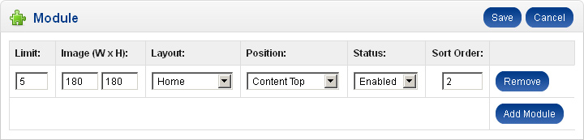
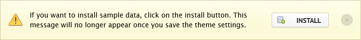
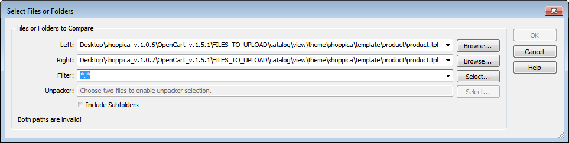
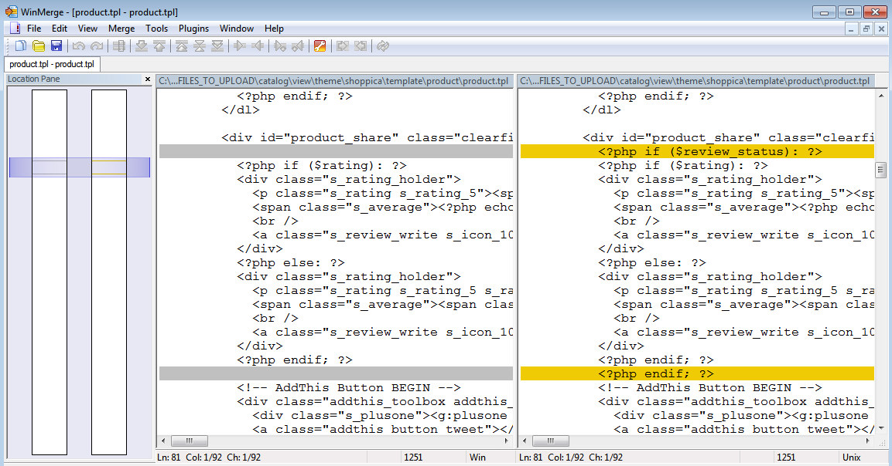

© 2012 ThemeBurn.com
made with the Documenter v1.6
made with the Documenter v1.6
The current documentation is for Shoppica 2 theme only. Please, read the whole section, before attempting to install!
Before installing the Shoppica 2 ecommerce theme, it is assumed that you have a working OpenCart installation.
We recommend to use this theme on a clean installation or existing shops without custom modifications.
1Copy theme files
Unzip the "shoppica-premium-open-cart-theme.zip" you have downloaded from ThemeForest.net to a local folder on your computer. Enter the shoppica_v.2.x.x folder. It should contain the following subfolders:

OpenCart_v.1.5.4.1 - use this folder if the version of your OpenCart installation is 1.5.4.1
OpenCart_v.1.5.5.1 - use this folder if the version of your OpenCart installation is 1.5.5.1
This is the Shoppica 2 package. Browse the appropriate OpenCart_v.1.5.x.x folder that corresponds to your OpenCart version and upload all the files from "FILES TO UPLOAD" to the directory you have installed OpenCart in. Together with providing new files, Shoppica 2 theme replaces some OpenCart core files (you may be prompted by your ftp client to replace them):
Don't be afraid - the changes we have made to these files are fully compatible with other themes and extensions. They won't cause you any troubles if you leave them, even if you stop using Shoppca.
2 Modify index.php
Shoppica theme needs a small modification to the /index.php in the root OpenCart folder (do not modify the index.php in the /admin/ folder). There are two possibilities - you can either replace the file with one from the Shoppica 2 package, or you can edit it manually.
If you have installed custom modifications to OpenCart (especially vQmod), it is most likely that /index.php has been changed and all your custom functionality may stop working after replacing it with the one provided with Shoppica.
If you are fine with replacing /index.php (you have not installed vQmod and haven't touched this file yourself), then browse the Additional directory from the Shoppica 2 package. There are several directories there that begin with OpenCart_v.. Open the one that corresponds to your OpenCart version. Take the /index.php file from it and upload it to the folder you have installed OpenCart in, replacing the current one.
If you don't want to replace /index.php, then read the instructions about how to edit it manually.
3Theme activation
Go to OpenCart administration and activate the theme from System › Settings › Edit Store settings › Store tab › Template dropdown
4Theme module installation
Go to Extensions › Modules. Here you must install Shoppica 2 CP module (click on the 'install' link).
5Image size adjustment
Every time you use a Bestseller, Special, Latest or Featured products module, you need to use these image settings (W x H)

6Install sample data
When entering the Shoppica 2 module for first time, you should see the following screen:

If you click on the 'Install' button, Shoppica 2 will install some default data in order to make your site similar to shoppica2.com. The installed data is theme specific only. No changes will be made to OpenCart store items (products, categories..) and rules (taxes, zones..). This is mainly usefull for newly installed shops.
Please, be aware that you cannot directly upgrade Shoppica 1.x to Shoppica 2.x. They are just different themes. They can co-exist in your OpenCart installation and you can switch from one to another.
Firstly, make sure Shoppica supports the OpenCart version you want to upgrade to. The Shoppica 2 package itself does not upgrade your OpenCart installation to higher version. The .zip archive from themeforest contains only Shoppica related files. If you want to upgrade to higher OpenCart version, you must download the new OpenCart update from the official OpenCart site and then apply it (don't forget to run /install/upgrade.php, after you put the new OpenCart files). It is recommended to disable the Shoppica theme (select the default theme) while upgrating to newer OpenCart version. Follow this link for more thorough explanation on how to upgrade opencart.
Download the latest version of Shoppica from your themeforest account. Make sure it supports the OpenCart version you are currently using.
To upgrade Shoppica simply re-upload the files from FILES_TO_UPLOAD directory from the latest Shoppica package. Refer to section 1) to determine the appropriate folder contantaing FILES_TO_UPLOAD.
Important!
Do not forget to re-save your shoppica control panel after upgrading the theme. Just enter Modules -> Shoppica CP and hit 'Save Settings'.
If you have done custom modifications to the theme and you don't want to re-upload and overwrite all of the files, you can take a look at the files changelog. You could copy only these files which have been changed since your last update. If you have hard times comparing and updating the changed files, check how you can easily compare two files.
If you want to upgrade OpenCart and Shoppica at once, you must first upgrade OpenCart and then Shoppica. After upgrading OpenCart, make sure everything works fine with the default theme. This will help you to distinguish the eventual OpenCart issues from Shoppica issues.
Again, if you are not doing a clean installation, beware that Shoppica 2 replaces some OpenCart core files (listed in installation step 1). We've made some very small but required modifications in order to make all Shoppica's advanced features possible. If you upgrade your OpenCart with a newer version, it is possible that these modified core file will be overwritten again. This will prevent Shoppica from working properly! In this case, you will have to reupload the Shoppica 2 files listed in Installation Step 1.
When you are adding a new store or a new language, re-save your Shoppica Control Panel. Just enter Modules -> Shoppica CP and hit 'Save Settings'.If you are installing Shoppica when vQmod is already present, do not forget to empty the vqmod/vqcache folder.
Shoppica provides many configuration options, divided by sections. In order to get the most from this theme, read carefully the descriptions and instructions below.
Important!
Shoppica theme is two columns only (it does not and it won't support 3 columns layout). When adding modules to the sidebar (Bestsellers, Latest, Featured, Specials, etc.) you must always choose Content Right as their position or they won't appear in the store front.
This section allows you to enable / disable some of the OpenCart default features. There are two custom features here as well:
This section allows you to set custom colors to your website.
You can use one of the predefined color themes (Blue, Green, Orange, Tan), or set a new one as well. There is an option to set different color themes to every category.
Use the "Launch Color Schemer" button to change theme colors live.
This section allows you to change theme fonts. You have more than 500 web optimized typefaces to choose from.
Warning! Don’t use too many different typefaces!
Using many font styles and subsets can slow down your webpage, so only select the font styles that you actually need. Some fonts does not support different languages and styles. Be practical with your font choise.
Usefull links:
1. Google WebFonts - you can easily filter and preview and fonts for your shop here.
2.
This article contains recommendations to some stylish fonts.
3. Another selection of good fonts.
This section allows you to upload custom website backgrounds.
Once you have uploaded a background image, you can use it from the Color Schemer widget on the website front.
This section allows you to append custom styles to the main theme stylesheet without manually modifying any theme files.
This section allows you to controll the top slideshow. You can have different intro for the home page and every category.
No intro
No intro is the first and default option for every newly created category. With this option selected, no slideshow is displayed when you browse a category. There are only the category name and a breadcrumbs navigation.
Product slideshow
The product slideshow option allows you to create a set of products and rotate them. Open the product listing dialog and choose the items for your slideshow.
Use the size option to control the product thumbnail dimentions.
Image slideshow
The Image slideshow options allows you to rotate static images. The maximum width of the images should be 920px
The additional options for the image slideshow are:
This section allows you to insert a short information about the shop. You can't use HTML here.
This section allows you to insert important shop contact information. You can put email, skype, phone, mobile and fax details here.
This widget allows you to show the latest tweets from your twitter account. The only thing you need here is your tweeter username.
This section allows you to setup a facebook like box. This widget helps users to see how many other users and friends already like a page. It also give them the option to like the page with one click.
Note, that the widget works only with facebook pages and not with profiles, or groups.
How to get your facebook fanpage ID?
1 Go to your facebook page. Click on Edit Page button.
2 On the next page, look at the location bar of your browser window and get the number after the ?id= part of the URL.
This section allows you to put logo (or other) images for the different payment methods. You could also specify a link for each image.
The most recommend size for each image is 51 x 32 pixels.
Here you can manage the theme's extensions. These extensions will work with the current theme only. The information about the future Shoppica extensions is yet to be updated.
This mini module allows you to create and manage banner sets for your webstore. You can follow these easy steps:
1 Install "Banners" module
Go to Extensions › Modules › Shoppica 2 PC › Extensions and click install for the Banners module. After the installation, there should be a new "Banners" tab in the Shoppica 2 CP module navigation.
2 Create a banner set
Go to Banners › Banner Sets and click on the New banner set button.
3 Use a banner set
Go to Banners › Banner Positions and assign the new banner set to a page. You can do this the same way you use a default OpenCart module.
Here is the list of css files that Shoppica theme uses:
The best practice for css customizations is to always put new styles at the bottom of the main stylesheet. This will help you to easily transfer all the changes, when you upgrade Shoppica.
You can use the main and the secondary colors assigned with the color themer throughout the whole website.You just need to wrap the selected string with a span with the following classes: s_main_color or s_secondary_color. e.g.:
<p>Your text stars here and now starts <span class="s_main_color">colored text</span>. Everything again goes normal.</p>
If you want to override the color of some elements that are controlled by the color themer, you need to insert !important declaration on your new styles, e.g:
#cart .s_icon {
background-color: #yourColor !important;
}
Here is the list with all the selectors controlled by the color schemer:
Body Background (applied only on layout type: fixed)
body.s_layout_fixed
Main color as text color
.s_main_color #twitter li span a .s_item .s_button_add_to_cart .s_box h2 .box .top
Main color as background color
.s_main_color_bgr #cart .s_icon #shop_contacts .s_icon .s_list_1 li .s_item .s_button_add_to_cart .s_icon .buttons .button #cart_menu .s_icon #intro .s_button_prev #intro .s_button_next
Secondary color as text color
.s_secondary_color a:hover #categories > ul > li > a #footer_categories h2 .pagination a #view_mode .s_selected a #content a:hover #shop_info a:hover #footer a:hover #content a:hover #shop_info a:hover #footer a:hover #breadcrumbs a:hover
Secondary color as background color
.s_secondary_color_bgr #show_search #view_mode .s_selected .s_icon #view_mode a:hover .s_icon #menu_home a:hover .pagination a:hover .s_item .s_button_add_to_cart:hover .s_icon .s_cart_item .s_button_remove:hover #intro .s_button_prev:hover #intro .s_button_next:hover
Intro background color
#intro
Intro text color
#intro #breadcrumbs a #intro .s_rating
Intro title color
#intro h1 #intro h1 * #intro h2 #intro h2 * #intro h1 a:hover #intro h2 a:hover
Price background and text color
.s_price .s_price .s_currency
Promo price background color
.s_promo_price .s_old_price .s_promo_price .s_currency
Theme custom javascript files are located in catalog/view/theme/shoppica2/javascript/. These files are:
The file contains all custom theme scripts (e.g. add to cart / compare/ wishlist function, browser compatibility fixes etc.) and is not recommended to be modified.
This script initialize the custom images slideshow.
// Slider options
$("#image_intro").slides({
effect: slideEffect,
crossfade: true,
preload: true,
fadeSpeed: 800,
slideSpeed: 800,
next: 's_button_next',
prev: 's_button_prev',
play: 5000,
generatePagination: false
});
Three parameters from these options may be more important for you:
You can find more info and more initialization options for the plugin on http://slidesjs.com/.
This script initializes the products slideshow. The file is almost identical to the one for the images slideshow. You can find more info and more initialization options for the plugin on http://slidesjs.com/.
This section shows how to easily modify /index.php manually, so you won't need to overwrite it with the one shipped with the Shoppica package. It is a very easy task - only two lines of code must be added. Here's how:
1 Open index.php with your preferred text editor.
2 Find the following two lines (approximately line 213):
// Front Controller $controller = new Front($registry);
3 Insert these two lines immediately* after them:
// TB
$controller->dispatch(new Action('common/tb', array('front' => $controller)), new Action('error/not_found'));
* If you are installing Shoppica 2 along with Shoppica 1, then the Shoppica 1 modification to index.php should always be after the one of Shoppica 2.
4 Save the index.php file
That's it. Now you don't have to replace the index.php file with the one provided by Shoppica 2 package, as the above addition is the only change we've made to this file.
You can read about adding another language here
Consider the following situation: you have modified a Shoppica template file to suit your needs and you find in the latest changelog that this file has been modified. It is unpleasantl surprise because now you have to wonder what tiny things we have changed to fix a bug or to add a feature. Luckily there are free tools which can assist you greatly. Such a tool is winmerge.
Just install it, and select the two files you want to compare:

After you click 'Ok' the program will compare the files line by line and will show you the difference in a very convenient way:

Now you can easily see we have added only two lines to the file and you can add them by hand.
We have used the following images, icons or other files as listed.
If you experience problems with the ThemeBurn products, you can post a topic in the appropriate category in our free support forum. This forum is only intended to offer support for setting up your themes/plugins and addressing any bugs you encounter with them. Be sure to read our support policy first.
We have prepared several guides in the how to section, as well as some advices on how to describe your issues with Shoppica. This would help us to better understand your problem and to be quick and adequat with our response. We will try our best to answer any questions you have within 2 business days, but during busy periods this may take longer.
Bear in mind that we do not support Shoppica copies obtained from all sorts of warez, nulled scripts, free download, torrents and filesharing sites. Beside from not respecting our work, they often contain malicious modifications to the code which exposes your server and personal data to exploiters. The only legal and safe way to obtain Shoppica is by purchasing it in themeforest.
{kind=link}
{kind=link}
{kind=link}
{kind=link}